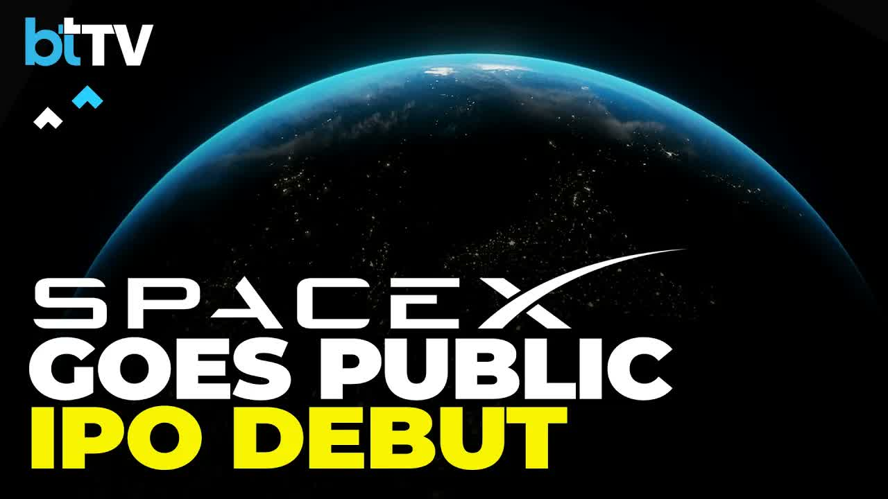

世界首富用一兆美金，替知識工作者指出的那條路
SpaceX 上市讓馬斯克成為全球首位兆美元富豪。從招股書 22.7 兆美元「自動化知識工作」與 Macrohard，看執行被自動化後，知識工作者該守住的判斷與該做的知識庫。
我對 AI 產業消息、工具更新、大廠發布會的判讀。重點放在：這些變化會怎麼影響個人工作流、團隊知識管理，以及下一步該練什麼能力。

SpaceX 上市讓馬斯克成為全球首位兆美元富豪。從招股書 22.7 兆美元「自動化知識工作」與 Macrohard，看執行被自動化後，知識工作者該守住的判斷與該做的知識庫。
從 Stanford GSB 對談與 Nana Chen Studio 二次解讀出發，看 AGI、後稀缺、雙重囚徒困境、智能與意識分離，如何改寫 AI 知識管理與 AI 員工。
從 WWDC26 看 Apple Intelligence、App Intents、View Annotations 到 Xcode agents：各家大廠都在把助理推向能讀介面、叫工具、串 App、完成任務的形態。